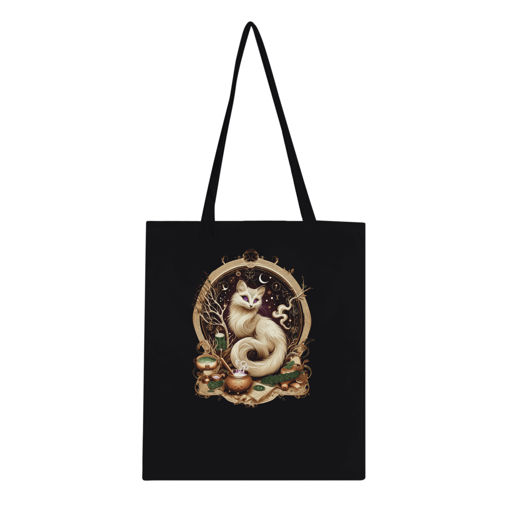

Sweat Capuche Hermine Mystique (Blanc, Dos décoré)
Enveloppez-vous dans la chaleur mystique de ce sweat à capuche blanc, orné du symbole de l’Hermine Mystique. Conçu pour les nuits fraîches ou les quêtes audacieuses, son coton biologique et son design recto-verso (dos décoré !) portent la magie de la Sorcière Blanche. Frais de livraison inclus.
- Coton biologique : Cultivé sans pesticides, en harmonie avec la nature.
- Confort enchanté : Coupe classique unisexe avec fermeture éclair.
- Design recto-verso : L’Hermine Mystique brille devant et derrière.
- Fabriqué à la demande : Un vêtement unique pour chaque sorcier.
- Tailles disponibles : S, M, L, XL, 2XL, 3XL.
Collection Hermine Mystique : Inspirée par l’hermine, fidèle compagne de notre Alchimiste.
Veuillez préciser la taille souhaitée (S, M, L, XL, 2XL, 3XL) dans la note client lors du paiement. Commandez aujourd’hui et recevez un fond d’écran numérique dédicacé (smartphone ou ordinateur, à préciser) le 1er octobre !
Partagez ce produit
Explorez nos Philtres
Découvrez d’autres trésors

Tote Bag Hermine Mystique
Portez les secrets de l’Hermine Mystique dans ce tote bag...
Découvrir